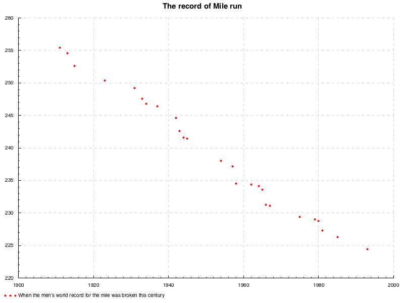
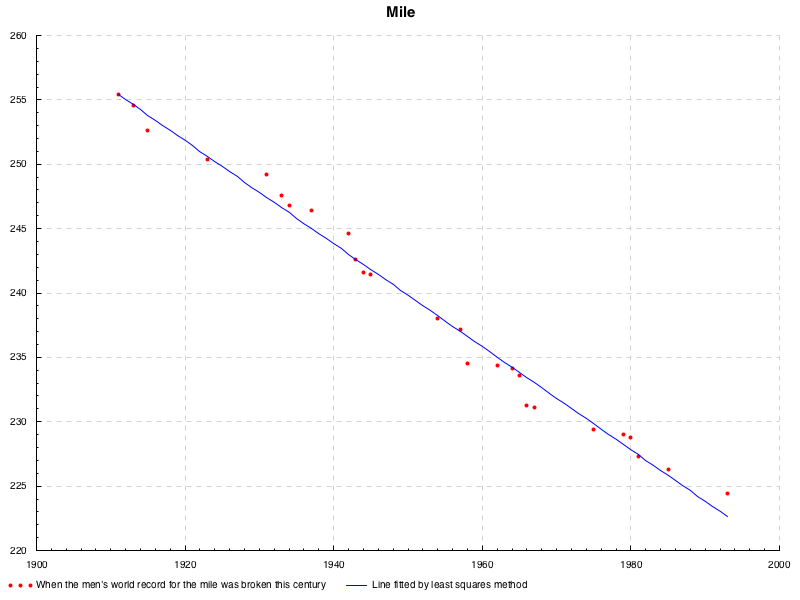
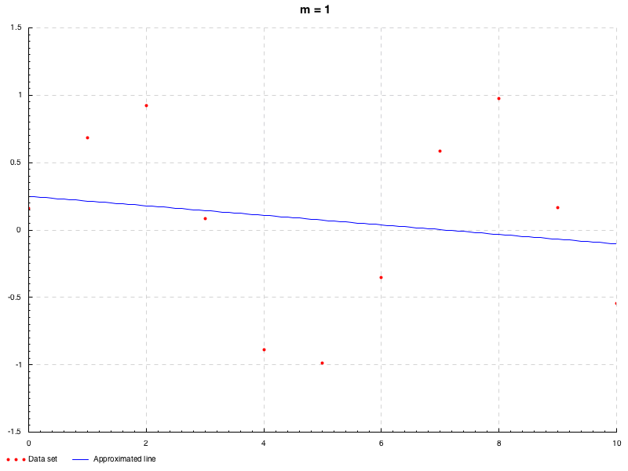
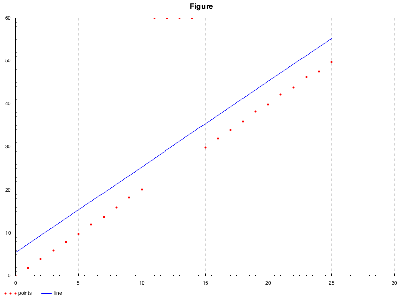

この記事は,
旧ブログ から移植された記事です. よって, その内容として,
旧ブログ に依存した文脈が含まれている可能性があります. 予めご了承下さい.
要旨
本エントリー(WIP)はカーブフィッティング全般に関して記述したものであり, それぞれの原理, 性質について学んだ際のメモとして, より単純なものから広く浅く挙げています. 極力ないようにはしていますが, 本内容は独学で得た知見より書いておりますので, 一部正確さが欠けている可能性があることは否めません. 何かありましたら, コメント等で指摘していただけるとありがたいです. また, 本エントリ内における近似およびプロット等に関する実装は次のリポジトリ
にまとまっています.
線形回帰
まずは, 回帰解析のうち最も基本的な手法である最小二乗法について. 次のような散布図を考える.
データセット
このデータセットは, マイルラン という中距離マラソンにおける男子世界記録の遷移を表しており, 横軸が世界記録を更新した年, 縦軸がその記録の秒数となっている. この散布図は負の相関関係があるといえる. まあ, 記録の更新というのは, ゴールするまでのタイムが縮んだということをいうので, これは当たり前の相関関係である.
このような直線的な関係があるようにみえるような散布について, それなりにそれらの点に相応しいような直線, つまり各点からの距離が最も小さくなるような直線を引きたいとしよう. これが本エントリにおける主題である.
線形最小二乗法
最小二乗法は, 上記のようなデータの組 ( x i , y i ) (x_i,y_i) ( x i , y i ) n n n x i x_i x i y i = a i + a i x 1 1 + ⋯ + a i x i n (i) y_i=a_i+a_ix^1_1+\cdots+a_ix^n_i\tag{i} y i = a i + a i x 1 1 + ⋯ + a i x i n ( i ) ( 14 ) (14) ( 14 ) a k a_k a k y y y a k a_k a k y = a x + b y=ax+b y = a x + b
ある点 ( x i , y i ) (x_i, y_i) ( x i , y i ) y i − ( a x i + b ) y_i-(ax_i+b) y i − ( a x i + b ) ϵ ( a , b ) : = ∑ i = 1 n ( y i − a x i − b ) 2 (1) \epsilon(a,b):=\displaystyle\sum^{n}_{i=1}(y_i-ax_i-b)^2\tag{1} ϵ ( a , b ) := i = 1 ∑ n ( y i − a x i − b ) 2 ( 1 )
さて, いま ( 1 ) (1) ( 1 ) b b b ( 1 ) (1) ( 1 ) a a a ∑ i = 1 n x i 2 \displaystyle\sum^{n}_{i=1}x_i^2 i = 1 ∑ n x i 2 0 0 0
∂ ϵ ( a , b ) ∂ a = 0 \frac{\partial\epsilon(a,b)}{\partial a}=0 ∂ a ∂ ϵ ( a , b ) = 0
とかける. 同様に, a a a n n n
∂ ϵ ( a , b ) ∂ b = 0 \frac{\partial\epsilon(a,b)}{\partial b}=0 ∂ b ∂ ϵ ( a , b ) = 0
とかける. いま求めたかったのはこのどちらをも満たす a , b a,b a , b ( 1 ) (1) ( 1 )
{ ∂ ϵ ( a , b ) ∂ a = ∑ i = 1 n 2 ( y i − ( a x i + b ) ) ⋅ ( − x i ) = 0 ∂ ϵ ( a , b ) ∂ b = ∑ i = 1 n 2 ( y i − ( a x i + b ) ) = 0
\begin{aligned}
&&\begin{cases}
&\displaystyle\frac{\partial\epsilon(a,b)}{\partial a}&=&\displaystyle\sum_{i=1}^{n}2(y_i-(ax_i+b))\cdot(-x_i)&=&0 \\
&\displaystyle\frac{\partial\epsilon(a,b)}{\partial b}&=&\displaystyle\sum_{i=1}^{n}2(y_i-(ax_i+b))&=&0
\end{cases}
\end{aligned}
⎩ ⎨ ⎧ ∂ a ∂ ϵ ( a , b ) ∂ b ∂ ϵ ( a , b ) = = i = 1 ∑ n 2 ( y i − ( a x i + b )) ⋅ ( − x i ) i = 1 ∑ n 2 ( y i − ( a x i + b )) = = 0 0
このような, 線形方程式におけるすべての定数項が 0 0 0 2 2 2
↔ { ∑ i = 1 n ( y i − ( a x i + b ) ) ⋅ x i = 0 ∑ i = 1 n ( y i − ( a x i + b ) ) = 0 ↔ { a ∑ i = 1 n x i 2 + b ∑ i = 1 n x i = ∑ i = 1 n x i y i a ∑ i = 1 n x i + b n = ∑ i = 1 n y i (2)
\begin{aligned}
&\leftrightarrow
&\begin{cases}
&\displaystyle\sum_{i=1}^{n}(y_i-(ax_i+b))\cdot x_i&=&0 \\
&\displaystyle\sum_{i=1}^{n}(y_i-(ax_i+b))&=&0
\end{cases} \\
&\leftrightarrow
&\begin{cases}
&\displaystyle a\sum_{i=1}^{n}x^2_i&+&\displaystyle b\sum_{i=1}^{n}x_i&=&\displaystyle\sum_{i=1}^{n}x_i y_i \\
&\displaystyle a\sum_{i=1}^{n}x_i&+&bn&=&\displaystyle\sum_{i=1}^{n}y_i
\end{cases}
\tag{2}
\end{aligned}
↔ ↔ ⎩ ⎨ ⎧ i = 1 ∑ n ( y i − ( a x i + b )) ⋅ x i i = 1 ∑ n ( y i − ( a x i + b )) = = 0 0 ⎩ ⎨ ⎧ a i = 1 ∑ n x i 2 a i = 1 ∑ n x i + + b i = 1 ∑ n x i bn = = i = 1 ∑ n x i y i i = 1 ∑ n y i ( 2 )
両辺を n n n
↔ { a ∑ i = 1 n x i 2 n + b ∑ i = 1 n x i n = ∑ i = 1 n x i y i n a ∑ i = 1 n x i n + b = ∑ i = 1 n y i n
\begin{aligned}
&\leftrightarrow
&\begin{cases}
&\displaystyle a\frac{\sum_{i=1}^{n}x^2_i}{n}&+&\displaystyle b\frac{\sum_{i=1}^{n}x_i}{n}&=&\displaystyle\frac{\sum_{i=1}^{n}x_i y_i}{n} \\
&\displaystyle a\frac{\sum_{i=1}^n x_i}{n}&+&b&=&\frac{\sum_{i=1}^ny_i}{n}
\end{cases}
\end{aligned}
↔ ⎩ ⎨ ⎧ a n ∑ i = 1 n x i 2 a n ∑ i = 1 n x i + + b n ∑ i = 1 n x i b = = n ∑ i = 1 n x i y i n ∑ i = 1 n y i ∑ i = 1 n x i n \frac{\sum_{i=1}^n x_i}{n} n ∑ i = 1 n x i x x x x x x ∑ i = 1 n y i n \frac{\sum_{i=1}^ny_i}{n} n ∑ i = 1 n y i y y y y y y x ‾ = ∑ i = 1 n x i n , y ‾ = ∑ i = 1 n y i n , x 2 ‾ = ∑ i = 1 n x i 2 n , x y ‾ = ∑ i = 1 n x i y i n \overline{x}=\frac{\sum_{i=1}^{n}x_i}{n}, \overline{y}=\frac{\sum_{i=1}^ny_i}{n}, \overline{x^2}=\frac{\sum_{i=1}^{n}x_i^2}{n}, \overline{xy}=\frac{\sum_{i=1}^{n}x_i y_i}{n} x = n ∑ i = 1 n x i , y = n ∑ i = 1 n y i , x 2 = n ∑ i = 1 n x i 2 , x y = n ∑ i = 1 n x i y i b = − a x ‾ + y ‾ b=-a\overline{x}+\overline{y} b = − a x + y a a a
( x 2 ‾ x ‾ x ‾ 1 ) ( a b ) = ( x y ‾ y ‾ )
\begin{aligned}
\left(\begin{array}{cc}
\overline{x^2} & \overline{x} \\ \overline{x} & 1
\end{array}\right)
\left(\begin{array}{c}
a \\ b
\end{array}\right)
&=&
\left(\begin{array}{c}
\overline{xy} \\
\overline{y}
\end{array}\right)
\end{aligned}
( x 2 x x 1 ) ( a b ) = ( x y y )
左辺の行列の行列式
d e t ( x 2 ‾ x ‾ x ‾ 1 )
\begin{aligned}
{\rm det}\left(\begin{array}{cc}
\overline{x^2} & \overline{x} \\ \overline{x} & 1
\end{array}\right)
\end{aligned}
det ( x 2 x x 1 )
は, x i x_i x i 0 0 0
( a b ) = ( x 2 ‾ x ‾ x ‾ 1 ) − 1 ( x y ‾ y ‾ )
\begin{aligned}
\left(\begin{array}{c}
a \\ b
\end{array}\right)
&=&\left(\begin{array}{cc}
\overline{x^2} & \overline{x} \\ \overline{x} & 1
\end{array}\right)^{-1}
\left(\begin{array}{c}
\overline{xy} \\
\overline{y}
\end{array}\right)
\end{aligned}
( a b ) = ( x 2 x x 1 ) − 1 ( x y y )
より ( a b ) T (a\ b)^T ( a b ) T
= ( x y ‾ − x ‾ ⋅ y ‾ x 2 ‾ − x ‾ 2 x 2 ‾ ⋅ y ‾ − x y ‾ ⋅ x ‾ x 2 ‾ − x ‾ 2 ) (3)
\begin{aligned}
&=&\left(\begin{array}{c}
\frac{\overline{xy}-\overline{x}\cdot\overline{y}}{\overline{x^2}-\overline{x}^2} \\
\frac{\overline{x^2}\cdot\overline{y}-\overline{xy}\cdot\overline{x}}{\overline{x^2}-\overline{x}^2}
\end{array}\right)\tag{3}
\end{aligned}
= ( x 2 − x 2 x y − x ⋅ y x 2 − x 2 x 2 ⋅ y − x y ⋅ x ) ( 3 )
と求まる. ここで, x y ‾ − x ‾ ⋅ y ‾ \overline{xy}-\overline{x}\cdot\overline{y} x y − x ⋅ y x 2 ‾ − x ‾ 2 \overline{x^2}-\overline{x}^2 x 2 − x 2 a a a C o v ( x , y ) σ x 2 \frac{\mathrm{Cov}(x,y)}{\sigma_x^2} σ x 2 Cov ( x , y ) ( 3 ) (3) ( 3 ) n n n
( 2 ) ↔ ( ∑ i = 1 n x i 2 ∑ i = 1 n x i ∑ i = 1 n x i n ) ( a b ) = ( ∑ i = 1 n x i y i ∑ i = 1 n y i ) ↔ ( a b ) = ( ∑ i = 1 n x i 2 ∑ i = 1 n x i ∑ i = 1 n x i n ) − 1 ( ∑ i = 1 n x i y i ∑ i = 1 n y i ) = ( ( ∑ i = 1 n x i y i ) n − ( ∑ i = 1 n x i ) ( ∑ i = 1 n y i ) ( ∑ i = 1 n x i 2 ) n − ( ∑ i = 1 n x i ) 2 ( ∑ i = 1 n x i 2 ) ( ∑ i = 1 n y i ) − ( ∑ i = 1 n x i y i ) ( ∑ i = 1 n x i ) ( ∑ i = 1 n x i 2 ) n − ( ∑ i = 1 n x i ) 2 )
\begin{aligned}
(2)&\leftrightarrow&
\left(\begin{array}{cc}
\displaystyle \sum_{i=1}^{n}x^2_i &\displaystyle \sum_{i=1}^{n}x_i \\
\displaystyle \sum_{i=1}^{n}x_i &n
\end{array}\right)
\left(\begin{array}{c}
a \\ b
\end{array}\right)&=&
\left(\begin{array}{c}
\displaystyle\sum_{i=1}^{n}x_i y_i \\ \displaystyle\sum_{i=1}^{n}y_i
\end{array}\right)
\\
&\leftrightarrow&
\left(\begin{array}{c}
a \\ b
\end{array}\right)&=&
\left(\begin{array}{cc}
\displaystyle \sum_{i=1}^{n}x^2_i &\displaystyle \sum_{i=1}^{n}x_i \\
\displaystyle \sum_{i=1}^{n}x_i &n
\end{array}\right)^{-1}
\left(\begin{array}{c}
\displaystyle\sum_{i=1}^{n}x_i y_i \\ \displaystyle\sum_{i=1}^{n}y_i
\end{array}\right) \\
&&&=&\left(\begin{array}{c}
\frac{(\sum^n_{i=1}x_iy_i) n-(\sum^n_{i=1}x_i)(\sum^n_{i=1}y_i)}{(\sum^n_{i=1}x^2_i) n-(\sum^n_{i=1}x_i)^2} \\
\frac{(\sum^n_{i=1}x^2_i)(\sum^n_{i=1}y_i)-(\sum^n_{i=1}x_iy_i)(\sum^n_{i=1}x_i)}{(\sum^n_{i=1}x^2_i) n-(\sum^n_{i=1}x_i)^2}
\end{array}\right)
\end{aligned}
( 2 ) ↔ ↔ i = 1 ∑ n x i 2 i = 1 ∑ n x i i = 1 ∑ n x i n ( a b ) ( a b ) = = = i = 1 ∑ n x i y i i = 1 ∑ n y i i = 1 ∑ n x i 2 i = 1 ∑ n x i i = 1 ∑ n x i n − 1 i = 1 ∑ n x i y i i = 1 ∑ n y i ( ∑ i = 1 n x i 2 ) n − ( ∑ i = 1 n x i ) 2 ( ∑ i = 1 n x i y i ) n − ( ∑ i = 1 n x i ) ( ∑ i = 1 n y i ) ( ∑ i = 1 n x i 2 ) n − ( ∑ i = 1 n x i ) 2 ( ∑ i = 1 n x i 2 ) ( ∑ i = 1 n y i ) − ( ∑ i = 1 n x i y i ) ( ∑ i = 1 n x i )
である. これを用いて, 次のように近似できる.
lenear equations
というのが, 最も素朴な最小二乗法の例である. より一般に, y y y m m m f ( x ) = b + ∑ j = 1 m a j x j \displaystyle f(x)=b+\sum_{j=1}^{m}a_j x^{j} f ( x ) = b + j = 1 ∑ m a j x j
ϵ = ∑ i = 1 n ( y i − b − ∑ j = 1 m a j x j ) 2 (4) \displaystyle\epsilon=\sum^{n}_{i=1}(y_i-b-\sum_{j=1}^{m}a_j x^{j})^2\tag{4} ϵ = i = 1 ∑ n ( y i − b − j = 1 ∑ m a j x j ) 2 ( 4 )
先と同様, 各変数ごとの偏微分が 0 0 0
{ ∂ ϵ ∂ b = − ∑ i = 1 n 2 ( y i − b − ∑ j = 1 m a j x j ) = 0 ∂ ϵ ∂ a 1 = − ∑ i = 1 n 2 x i ( y i − b − ∑ j = 1 m a j x j ) = 0 ⋮ ∂ ϵ ∂ a m = − ∑ i = 1 n 2 x i m ( y i − b − ∑ j = 1 m a j x j ) = 0
\begin{aligned}
\begin{cases}
&\displaystyle\frac{\partial\epsilon}{\partial b}&=&\displaystyle-\sum_{i=1}^{n}2(y_i-b-\sum_{j=1}^{m}a_j x^{j})&=&0 \\
&\displaystyle\frac{\partial\epsilon}{\partial a_1}&=&\displaystyle-\sum_{i=1}^{n}2x_i(y_i-b-\sum_{j=1}^{m}a_j x^{j})&=&0 \\
&&&\vdots& \\
&\displaystyle\frac{\partial\epsilon}{\partial a_m}&=&\displaystyle-\sum_{i=1}^{n}2x^m_i(y_i-b-\sum_{j=1}^{m}a_j x^{j})&=&0
\end{cases}
\end{aligned}
⎩ ⎨ ⎧ ∂ b ∂ ϵ ∂ a 1 ∂ ϵ ∂ a m ∂ ϵ = = = − i = 1 ∑ n 2 ( y i − b − j = 1 ∑ m a j x j ) − i = 1 ∑ n 2 x i ( y i − b − j = 1 ∑ m a j x j ) ⋮ − i = 1 ∑ n 2 x i m ( y i − b − j = 1 ∑ m a j x j ) = = = 0 0 0
先の例に合わせて, 両辺を 2 n 2n 2 n
( 1 x ‾ ⋯ x m ‾ x ‾ x 2 ‾ ⋯ x m + 1 ‾ ⋮ ⋮ ⋱ ⋮ x m ‾ x m + 1 ‾ ⋯ x 2 m ‾ ) ( b a 1 ⋮ a m ) = ( y ‾ x y ‾ ⋮ x m y ‾ )
\begin{aligned}
\left(\begin{array}{cccc}
1 & \overline{x} & \cdots & \overline{x^m} \\
\overline{x} & \overline{x^2} & \cdots & \overline{x^{m+1}} \\
\vdots & \vdots & \ddots & \vdots \\
\overline{x^m} & \overline{x^{m+1}} & \cdots & \overline{x^{2m}}
\end{array}\right)
\left(\begin{array}{c}
b \\ a_1 \\ \vdots \\ a_m
\end{array}\right)=
\left(\begin{array}{c}
\overline{y} \\
\overline{xy} \\
\vdots \\
\overline{x^my}
\end{array}\right)
\end{aligned}
1 x ⋮ x m x x 2 ⋮ x m + 1 ⋯ ⋯ ⋱ ⋯ x m x m + 1 ⋮ x 2 m b a 1 ⋮ a m = y x y ⋮ x m y
なので,
( b a 1 ⋮ a m ) = ( 1 x ‾ ⋯ x m ‾ x ‾ x 2 ‾ ⋯ x m + 1 ‾ ⋮ ⋮ ⋱ ⋮ x m ‾ x m + 1 ‾ ⋯ x 2 m ‾ ) − 1 ( y ‾ x y ‾ ⋮ x m y ‾ ) = ( n ∑ i = 1 n x i ⋯ ∑ i = 1 n x i m ∑ i = 1 n x i ∑ i = 1 n x i 2 ⋯ ∑ i = 1 n x i m + 1 ⋮ ⋮ ⋱ ⋮ ∑ i = 1 n x i m ∑ i = 1 n x i m + 1 ⋯ ∑ i = 1 n x i 2 m ) − 1 ( ∑ i = 1 n y i ∑ i = 1 n x i y i ⋮ ∑ i = 1 n x i m y i )
\begin{aligned}
\left(\begin{array}{c}
b \\ a_1 \\ \vdots \\ a_m
\end{array}\right)&=&
\left(\begin{array}{cccc}
1 & \overline{x} & \cdots & \overline{x^m} \\
\overline{x} & \overline{x^2} & \cdots & \overline{x^{m+1}} \\
\vdots & \vdots & \ddots & \vdots \\
\overline{x^m} & \overline{x^{m+1}} & \cdots & \overline{x^{2m}}
\end{array}\right)^{-1}
\left(\begin{array}{c}
\overline{y} \\
\overline{xy} \\
\vdots \\
\overline{x^my}
\end{array}\right) \\
&=&\left(\begin{array}{cccc}
n & \displaystyle\sum^{n}_{i=1}x_i & \cdots & \displaystyle\sum^{n}_{i=1}x^m_i \\
\displaystyle\sum^{n}_{i=1}x_i & \displaystyle\sum^{n}_{i=1}x_i^2 & \cdots & \displaystyle\sum^{n}_{i=1}x_i^{m+1} \\
\vdots & \vdots & \ddots & \vdots \\
\displaystyle\sum^{n}_{i=1}x_i^m & \displaystyle\sum^{n}_{i=1}x_i^{m+1} & \cdots & \displaystyle\sum^{n}_{i=1}x_i^{2m}
\end{array}\right)^{-1}
\left(\begin{array}{c}
\displaystyle\sum^n_{i=1}y_i \\ \displaystyle\sum^n_{i=1}x_iy_i \\ \vdots \\ \displaystyle\sum^n_{i=1}x_i^my_i
\end{array}\right)
\end{aligned}
b a 1 ⋮ a m = = 1 x ⋮ x m x x 2 ⋮ x m + 1 ⋯ ⋯ ⋱ ⋯ x m x m + 1 ⋮ x 2 m − 1 y x y ⋮ x m y n i = 1 ∑ n x i ⋮ i = 1 ∑ n x i m i = 1 ∑ n x i i = 1 ∑ n x i 2 ⋮ i = 1 ∑ n x i m + 1 ⋯ ⋯ ⋱ ⋯ i = 1 ∑ n x i m i = 1 ∑ n x i m + 1 ⋮ i = 1 ∑ n x i 2 m − 1 i = 1 ∑ n y i i = 1 ∑ n x i y i ⋮ i = 1 ∑ n x i m y i
で求まる. この正確な解を機械的に求める場合には, この逆行列を求めなくとも, ガウスの消去法などを基本とした解法(直接解法)で解ける.
先のデータは直線的であったので, 今度は曲線が引けそうなデータセットとして, x i = i − 1 , y i = sin ( x i ) + ϵ , i = 1 , 2 , ⋯ , 11 x_i=i-1, y_i=\sin(x_i)+\epsilon, i=1,2,\cdots,11 x i = i − 1 , y i = sin ( x i ) + ϵ , i = 1 , 2 , ⋯ , 11 ϵ \epsilon ϵ N ( 0 , 0.2 ) \mathrm{N}(0, 0.2) N ( 0 , 0.2 ) 1 ≤ m ≤ 9 1\leq m\leq 9 1 ≤ m ≤ 9 → \to → 解説 ).
lenear equations
ところで, 冒頭で示した関数 ( i ) (i) ( i )
y i = a 0 + ∑ j = 1 m a j f j ( x i 1 , x i 2 , ⋯ , x i n ) + u i , i = 1 , ⋯ , m (ii) y_i=a_0+\sum^m_{j=1}a_jf_j(x_i^1,x_i^2,\cdots,x_i^n)+u_i,\ i=1,\cdots,m\tag{ii} y i = a 0 + j = 1 ∑ m a j f j ( x i 1 , x i 2 , ⋯ , x i n ) + u i , i = 1 , ⋯ , m ( ii )
ここで, f j f_j f j x i k x_{i}^k x i k u i u_i u i i i i u i u_i u i u i u_i u i i.i.d で N ( 0 , σ 2 ) \mathrm{N}(0,\sigma^2) N ( 0 , σ 2 )
一般逆行列
ここまでは, 回帰直線の考え方に沿って近似曲線/直線を得た訳であるが, そもそも, ( x i , y i ) (x_i,y_i) ( x i , y i ) y y y x x x m m m n ′ = n + 1 n'=n+1 n ′ = n + 1 X a = y w h e r e X ∈ R m × n ′ , a ∈ R n ′ × 1 , y ∈ R m × 1 X{\boldsymbol a}={\boldsymbol y}\ \ {\rm where}\ X\in\mathbb{R}^{m\times n'}, {\boldsymbol a}\in\mathbb{R}^{n'\times 1}, {\boldsymbol y}\in\mathbb{R}^{m\times 1} X a = y where X ∈ R m × n ′ , a ∈ R n ′ × 1 , y ∈ R m × 1
( y 1 y 2 ⋮ y m ) = ( x 1 0 x 1 1 ⋯ x 1 n x 2 0 x 2 1 ⋯ x 2 n ⋮ ⋮ ⋱ ⋮ x m 0 x m 1 ⋯ x m n ) ( a 0 a 1 ⋮ a n ) ( x 1 0 x 1 1 ⋯ x 1 n x 2 0 x 2 1 ⋯ x 2 n ⋮ ⋮ ⋱ ⋮ x m 0 x m 1 ⋯ x m n ) − 1 ( y 1 y 2 ⋮ y m ) = ( a 0 a 1 ⋮ a n ) (5)
\begin{aligned}
\left(\begin{array}{c}
y_1 \\
y_2 \\
\vdots \\
y_m
\end{array}\right)=
\left(\begin{array}{cccc}
x_1^0 & x_1^1 & \cdots & x_1^n \\
x_2^0 & x_2^1 & \cdots & x_2^n \\
\vdots & \vdots & \ddots & \vdots \\
x_m^0 & x_m^1 &\cdots & x_m^n
\end{array}\right)
\left(\begin{array}{c}
a_0 \\
a_1 \\
\vdots \\
a_n
\end{array}\right) \\
\left(\begin{array}{cccc}
x_1^0 & x_1^1 & \cdots & x_1^n \\
x_2^0 & x_2^1 & \cdots & x_2^n \\
\vdots & \vdots & \ddots & \vdots \\
x_m^0 & x_m^1 &\cdots & x_m^n
\end{array}\right)^{-1}
\left(\begin{array}{c}
y_1 \\
y_2 \\
\vdots \\
y_m
\end{array}\right)
=
\left(\begin{array}{c}
a_0 \\
a_1 \\
\vdots \\
a_n
\end{array}\right)\tag{5}
\end{aligned}
y 1 y 2 ⋮ y m = x 1 0 x 2 0 ⋮ x m 0 x 1 1 x 2 1 ⋮ x m 1 ⋯ ⋯ ⋱ ⋯ x 1 n x 2 n ⋮ x m n a 0 a 1 ⋮ a n x 1 0 x 2 0 ⋮ x m 0 x 1 1 x 2 1 ⋮ x m 1 ⋯ ⋯ ⋱ ⋯ x 1 n x 2 n ⋮ x m n − 1 y 1 y 2 ⋮ y m = a 0 a 1 ⋮ a n ( 5 )
を解いて, それが求まれば良いのではないか, ということである(n + 1 n+1 n + 1 m m m
n ′ = m n'=m n ′ = m r a n k ( X ) {\rm rank}(X) rank ( X ) n ′ = m n'=m n ′ = m X X X X − 1 X a = X − 1 y X^{-1}X{\boldsymbol a}=X^{-1}{\boldsymbol y} X − 1 X a = X − 1 y n ′ < m n'\lt m n ′ < m n ′ n' n ′ a {\boldsymbol a} a X X X y {\boldsymbol y} y r a n k ( X ) < n ′ {\rm rank}(X)\lt n' rank ( X ) < n ′ m < n ′ m\lt n' m < n ′ m m m a {\boldsymbol a} a r a n k ( X ) < m {\rm rank}(X)\lt m rank ( X ) < m
いま 2 つの重複がある場合を考えることができたが, 重複を除けば, いま述べたうちのどれかに帰着させることができる. 重複の場合を直線で捉えると, それぞれの方程式が x , y x, y x , y
まとめると, つまり X a = y X{\boldsymbol a}={\boldsymbol y} X a = y
次の式を満たす行列
X − ∈ R m × n ′ X^-\in\mathbb{R}^{m\times n'} X − ∈ R m × n ′ を一般逆行列といい,
X X X が特異行列ならば
X − X^- X − は一意ではないが常に存在する.
X X − X = X X X^-X = X X X − X = X
“適当であるような”解は様々に考えられるように, 一般逆行列の定義も様々である. 以下やや天下り的ではあるが便宜上の理由より示してしまうと, いくらかの一般逆行列は次で定めるムーア・ベンローズ一般逆行列(以下 MP 逆行列)に従っており, 暗に一般逆行列と言ってこの MP 逆行列のことを示すような場合が巷ではある.
次のすべての条件を満たす
一般逆行列 X † X^{\dagger} X † は Moore-Penrose 一般逆行列(MP 逆行列)といい, その存在は一意である.
X X † X = X (6) X X^\dagger X=X\tag{6} X X † X = X ( 6 ) X † X X † = X † (7) X^{\dagger}X X^{\dagger}=X^{\dagger}\tag{7} X † X X † = X † ( 7 ) ( X † X ) T = X † X (8) (X^{\dagger}X)^T=X^{\dagger}X\tag{8} ( X † X ) T = X † X ( 8 ) ( X X † ) T = X X † (9) (X X^{\dagger})^T=X X^{\dagger}\tag{9} ( X X † ) T = X X † ( 9 )
最小二乗形一般逆行列
まず, ケース 2 の場合について考える. これは, 最小二乗形一般逆行列といわれる一般逆行列を用いる. これが定める“適当であるような”解とは, その名の通り, すべての方程式の二乗誤差が最小である値であり, まさしく上で述べた最小二乗法の値である.
正規方程式
a = X − y {\boldsymbol a}=X^-{\boldsymbol y} a = X − y の解
a {\boldsymbol a} a を二乗誤差最小の値で定める
一般逆行列 ∃ X − ∈ R m × n ′ s . t . m > n ′ ∧ ( X X − ) T = X X − ^\exists X^-\in\mathbb{R}^{m\times n'}\ {\rm s.t.}\ m\gt n'\land(X X^-)^T = X X^- ∃ X − ∈ R m × n ′ s.t. m > n ′ ∧ ( X X − ) T = X X − は
X X X の最小二乗形一般逆行列である.
以下, 最小二乗形一般逆行列の定式を求めるが, 上で既に述べた内容と本質的には全く変わらない. ここで, 少し扱いやすくするために, n n n f n ( x ) = a 0 x i 0 + a 1 x i 1 + ⋯ + a n x i n = ∑ j = 0 n a j x i j f_n(x)=a_0x^0_i+a_1x^1_i+\cdots+a_nx^n_i=\sum^{n}_{j=0}a_jx^j_i f n ( x ) = a 0 x i 0 + a 1 x i 1 + ⋯ + a n x i n = ∑ j = 0 n a j x i j ( 5 ) (5) ( 5 ) x i j x_i^j x i j X X X i i i x i {\boldsymbol x_i} x i e . g . x 1 = ( x 1 0 , x 1 1 , ⋯ , x 1 n ) T {\rm e.g.}\ \ {\boldsymbol x_1}=(x_1^0, x_1^1, \cdots, x_1^n )^T e.g. x 1 = ( x 1 0 , x 1 1 , ⋯ , x 1 n ) T ( 4 ) (4) ( 4 )
ϵ = ∑ i = 1 m ( y i − f n ( x i ) ) 2 (10) \epsilon=\sum_{i=1}^{m}(y_i-f_n({\boldsymbol x_i}))^2\tag{10} ϵ = i = 1 ∑ m ( y i − f n ( x i ) ) 2 ( 10 )
というように表す(これは ( 4 ) (4) ( 4 ) f ( x i ) = x i T a f({\boldsymbol x_i})={\boldsymbol x_i}^T{\boldsymbol a} f ( x i ) = x i T a
= ∑ i = 1 m ( y i − x i T a ) 2 =\sum_{i=1}^{m}(y_i-{\boldsymbol x_i}^T{\boldsymbol a})^2 = i = 1 ∑ m ( y i − x i T a ) 2
( x 1 T , x 2 T , ⋯ , x m T ) T = X ({\boldsymbol x_1}^T,{\boldsymbol x_2}^T,\cdots,{\boldsymbol x_m}^T)^T=X ( x 1 T , x 2 T , ⋯ , x m T ) T = X
= ( y − X a ) T ( y − X a ) =({\boldsymbol y}-X{\boldsymbol a})^T({\boldsymbol y}-X{\boldsymbol a}) = ( y − X a ) T ( y − X a )
ここで, 先にやった, 偏微分を考えることで下に凸な二次関数となることを利用し, その値を 0 0 0 a {\boldsymbol a} a a i {\boldsymbol a_i} a i
∇ ϵ ( a ) = 2 X T X a − 2 X T y = − 2 X T ( y − X a ) \nabla\epsilon({\boldsymbol a})=2X^T X{\boldsymbol a}-2X^T{\boldsymbol y}=-2X^T({\boldsymbol y}-X{\boldsymbol a}) ∇ ϵ ( a ) = 2 X T X a − 2 X T y = − 2 X T ( y − X a )
∇ ϵ ( a ) = 0 \nabla\epsilon({\boldsymbol a})=0 ∇ ϵ ( a ) = 0
X T X a = X T y X^T X{\boldsymbol a}=X^T{\boldsymbol y} X T X a = X T y
と正規方程式が求まった. ここで, n ′ = m − 1 n'=m-1 n ′ = m − 1 X X X x 1 , ⋯ , x m {\boldsymbol x_1}, \cdots, {\boldsymbol x_m} x 1 , ⋯ , x m X X X
a = ( X T X ) − 1 X T y = X − 1 y {\boldsymbol a}=(X^T X)^{-1}X^T {\boldsymbol y}={X}^{-1}{\boldsymbol y} a = ( X T X ) − 1 X T y = X − 1 y
とかける. n ′ < m − 1 n'\lt m-1 n ′ < m − 1 X T X X^T X X T X
a = ( X T X ) − 1 X T y (11) {\boldsymbol a}=(X^T X)^{-1}X^T{\boldsymbol y}\tag{11} a = ( X T X ) − 1 X T y ( 11 )
とかける. このとき m < n m\lt n m < n X T X X^T X X T X O ( n 3 ) \mathrm{O}(n^3) O ( n 3 ) MP 逆行列 であることが導出できる.
最小ノルム形一般逆行列
次に, ケース 3 の場合を考える. この場合, 最小ノルム形一般逆行列を用いる. ケース 3 は様々な値が解になりうるということであったが, 最小ノルム形一般逆行列は, いまそれを X − X^- X − a = X − y {\boldsymbol a}=X^-{\boldsymbol y} a = X − y a {\boldsymbol a} a L 2 L^2 L 2 ∣ ∣ a ∣ ∣ 2 \mid\mid {\boldsymbol a}\mid\mid_2 ∣∣ a ∣ ∣ 2
正規方程式
a = X − y {\boldsymbol a}=X^-{\boldsymbol y} a = X − y の解
a {\boldsymbol a} a をその
L 2 L^2 L 2 ノルム
∣ ∣ a ∣ ∣ 2 \mid\mid {\boldsymbol a}\mid\mid_2 ∣∣ a ∣ ∣ 2 が最小となる値で定める
一般逆行列 ∃ X − ∈ R m × n ′ s . t . m < n ′ ∧ ( X − X ) T = X − X ^\exists X^-\in\mathbb{R}^{m\times n'}\ {\rm s.t.}\ m\lt n'\land(X^- X)^T = X^- X ∃ X − ∈ R m × n ′ s.t. m < n ′ ∧ ( X − X ) T = X − X は
X X X の最小ノルム形一般逆行列である.
つまり, 解くべきは次に示す制約付き最適化問題/条件付き極小値問題である.
min a ∣ ∣ a ∣ ∣ 2 2 s . t . y = X a \min_{{\boldsymbol a}}\mid\mid{\boldsymbol a}\mid\mid^2_2\ {\rm s.t.}\ {\boldsymbol y}=X{\boldsymbol a} a min ∣∣ a ∣ ∣ 2 2 s.t. y = X a
条件付き極値の問題はラグランジュの未定乗数法で解ける. この証明は中々大変なので, 本エントリでは公理として認めた上で用いることとする(TODO). 従って, ラグランジアンを次のように定義する.
L ( a , λ ) : = ∣ ∣ a ∣ ∣ 2 2 + λ T ( y − X a ) \mathcal{L}({\boldsymbol a}, {\boldsymbol \lambda}):=\mid\mid{\boldsymbol a}\mid\mid^2_2+{\boldsymbol \lambda}^T({\boldsymbol y}-X{\boldsymbol a}) L ( a , λ ) :=∣∣ a ∣ ∣ 2 2 + λ T ( y − X a )
ラグランジュの未定乗数法に従い, それぞれの偏導関数から求めて
{ ∂ ∂ a L ( a ) = 2 a − X T λ = 0 ∂ ∂ λ L ( a ) = y − X a = 0
\begin{aligned}
\begin{cases}
\frac{\partial}{\partial{\boldsymbol a}}\mathcal{L}({\boldsymbol a})&=&2{\boldsymbol a}-X^T{\boldsymbol \lambda}&=&0 \\
\frac{\partial}{\partial{\boldsymbol \lambda}}\mathcal{L}({\boldsymbol a})&=&{\boldsymbol y}-X{\boldsymbol a}&=&0
\end{cases}
\end{aligned}
{ ∂ a ∂ L ( a ) ∂ λ ∂ L ( a ) = = 2 a − X T λ y − X a = = 0 0
よって
{ a = 1 2 X T λ y = X a ↔ y = 1 2 X X T λ
\begin{aligned}
\begin{cases}
{\boldsymbol a}&=&\frac{1}{2}X^T\lambda \\
{\boldsymbol y}&=&X{\boldsymbol a}
\end{cases}\leftrightarrow{\boldsymbol y}=\frac{1}{2}X X^T\lambda
\end{aligned}
{ a y = = 2 1 X T λ X a ↔ y = 2 1 X X T λ
m < n ′ m\lt n' m < n ′ X X T X X^T X X T
λ = 2 ( X X T ) − 1 y ↔ a = X T ( X X T ) − 1 y \lambda=2(X X^T)^{-1}{\boldsymbol y}\leftrightarrow {\boldsymbol a}=X^T(X X^T)^{-1}{\boldsymbol y} λ = 2 ( X X T ) − 1 y ↔ a = X T ( X X T ) − 1 y
X a = X { X T ( X X T ) − 1 y } = ( X X T ) ( X X T ) − 1 y = y X{\boldsymbol a}=X\left\{X^T(X X^T)^{-1}{\boldsymbol y}\right\}=(X X^T)(X X^T)^{-1}{\boldsymbol y}={\boldsymbol y} X a = X { X T ( X X T ) − 1 y } = ( X X T ) ( X X T ) − 1 y = y
制限つき最小二乗法
最後に, 重複がある(ランク落ちである)ケースを考える. この場合は, X T X , X X T X^T X, X X^T X T X , X X T
∀ X ∈ R m × n ′ ^\forall X\in\mathbb{R}^{m\times n'} ∀ X ∈ R m × n ′ ∃ U ∈ R m × m , ∃ V ∈ R n ′ × n ′ , ∃ Σ ∈ R n ′ × m s . t . X = U Σ V T w h e r e Σ = ( λ 1 ⋯ 0 ⋮ ⋱ ⋮ 0 ⋯ λ r 0 0 ) , λ 1 ≥ ⋯ ≥ λ r ≥ 0 , r = r a n k ( X ) = min ( m , n ′ )
^\exists U\in\mathbb{R}^{m\times m}, ^\exists V\in\mathbb{R}^{n'\times n'},
^\exists \Sigma\in\mathbb{R}^{n'\times m}\ {\rm s.t.}\
X = U\Sigma V^T \\ {\rm where}\ \Sigma=\left(\begin{array}{ccccc}\lambda_1&\cdots&0 \\ \vdots&\ddots&\vdots \\ 0&\cdots&\lambda_{r} \\ &&&0 \\ &&&&0 \end{array}\right), \lambda_1\geq\cdots\geq\lambda_{r}\geq 0,r=\mathrm{rank}(X)=\min(m,n')
∃ U ∈ R m × m , ∃ V ∈ R n ′ × n ′ , ∃ Σ ∈ R n ′ × m s.t. X = U Σ V T where Σ = λ 1 ⋮ 0 ⋯ ⋱ ⋯ 0 ⋮ λ r 0 0 , λ 1 ≥ ⋯ ≥ λ r ≥ 0 , r = rank ( X ) = min ( m , n ′ ) U Σ V T U\Sigma V^T U Σ V T X X X
これは
∑ i = 1 r λ i u i v i T w h e r e ( u 1 , ⋯ , u m ) T = ( u 11 ⋯ u 1 m ⋮ ⋱ ⋮ u m 1 ⋯ u m m ) = U ( v 1 , ⋯ , v n ′ ) T = ( v 11 ⋯ v 1 n ′ ⋮ ⋱ ⋮ v n ′ 1 ⋯ v n ′ n ′ ) = V
\begin{aligned}
\displaystyle\sum^{r}_{i=1}\lambda_i{\boldsymbol u_i}{\boldsymbol v_i}^T\ {\rm where}
\ \begin{array}{cc}
({\boldsymbol u_1},\cdots,{\boldsymbol u_m})^T
&=&\left(\begin{array}{ccc}
u_{11}&\cdots&u_{1m} \\
\vdots&\ddots&\vdots\\
u_{m1}&\cdots&u_{mm}
\end{array}\right)&=&U \\
({\boldsymbol v_1},\cdots,{\boldsymbol v_{n'}})^T
&=&\left(\begin{array}{ccc}
v_{11}&\cdots&v_{1n'} \\
\vdots&\ddots&\vdots\\
v_{n'1}&\cdots&v_{n'n'}
\end{array}\right)&=&V
\end{array}
\end{aligned}
i = 1 ∑ r λ i u i v i T where ( u 1 , ⋯ , u m ) T ( v 1 , ⋯ , v n ′ ) T = = u 11 ⋮ u m 1 ⋯ ⋱ ⋯ u 1 m ⋮ u mm v 11 ⋮ v n ′ 1 ⋯ ⋱ ⋯ v 1 n ′ ⋮ v n ′ n ′ = = U V
と同値であり, 一般に λ i \lambda_i λ i u i {\boldsymbol u_i} u i v i {\boldsymbol v_i} v i
TODO: 詳解を追記
オーバーフィッティングと正則化およびその評価
先に, 次数に応じた近似の遷移が観察できるアニメーションを示したが, あまり次数を大きくすると, データ点の間で誤差が大きくなってしまうことがある. これをオーバーフィッティングという. 先と同様, x i = i − 1 , y i = sin ( x i ) + ϵ , i = 1 , 2 , ⋯ , 11 x_i=i-1, y_i=\sin(x_i)+\epsilon, i=1,2,\cdots,11 x i = i − 1 , y i = sin ( x i ) + ϵ , i = 1 , 2 , ⋯ , 11 ( 5 ) (5) ( 5 ) ( a 0 , a 1 , ⋯ , a n ) T (a_0,a_1,\cdots,a_n)^T ( a 0 , a 1 , ⋯ , a n ) T ( a n , a n − 1 , ⋯ , a 0 ) T (a_n,a_{n-1},\cdots,a_0)^T ( a n , a n − 1 , ⋯ , a 0 ) T
> : m + Data.Tuple.Extra Data.Maybe System.Random Random.Normal Control.Monad ML.Approx.OLS.ByPinv Utils > let uni = normalIO' (0 , 0.2 )> let d = zipWith (\x y -> (x, sin x+ y)) [0 .. 10 ] <$> replicateM 11 uni> dd <- d> dd0.0 ,- 5.563765361160251e-4 ),(1.0 ,0.9418472638241775 ),(2.0 ,1.1378051539092622 ),(3.0 ,0.30341406458452413 ),(4.0 ,- 0.8411970236084821 ),(5.0 ,- 0.8558604338359868 ),(6.0 ,- 0.2586281201459223 ),(7.0 ,0.8031257237891795 ),(8.0 ,1.1562504257723663 ),(9.0 ,0.39633872602316167 ),(10.0 ,- 0.8085898217611907 )]> let outCoes i = putStrLn $ maybe "failed" (((++ ) $ show i ++ " -----\n" ) . foldr1 (++ ) . (map ((++ "\n" ) . show ))) $ resolve i dd> mapM_ outCoes [1 .. 10 ]1 ----- - 4.168066672607503e-2 ]0.38785329563173637 ]2 ----- 6.311957210780993e-3 ]- 0.10480023883388496 ]0.4825326537934513 ]9 ----- 6.2497127164502315e-6 ]- 2.783924911591259e-4 ]5.143290075166487e-3 ]- 5.026523522855991e-2 ]0.2724261548894942 ]- 0.7770268952402895 ]1.0147233691594897 ]- 0.7860963186273294 ]1.2602569068891822 ]- 2.3687551597216985e-4 ]10 ----- - 1.626701126479776e-5 ]8.196002759563384e-4 ]- 1.7705498506683254e-2 ]0.21421719275219878 ]- 1.5895590768542918 ]7.43609912277545 ]- 21.670288785218535 ]37.428871273332284 ]- 34.68074111840572 ]13.820707197220901 ]- 5.563765361160251e-4 ]m = 10 m=10 m = 10 − 21.670 ⋯ , 37.428 ⋯ , − 34.680 ⋯ , 13.820 ⋯ -21.670\cdots,37.428\cdots,-34.680\cdots,13.820\cdots − 21.670 ⋯ , 37.428 ⋯ , − 34.680 ⋯ , 13.820 ⋯ m = 9 , 10 m=9, 10 m = 9 , 10
> mapM_ (\i -> plot $ PP ("./image" ++ show i ++ ".png" ) ("m = " ++ show i) "points" "line" dd $ fromJust $ implicitFn $ fromJust $ resolve i dd) [9 , 10 ]m = 10 m=10 m = 10 m = 9 m=9 m = 9
天下り的になってしまうが, このような現象は推定する係数に対して標本数が少ないようなときによく遭遇する. その特徴として, いま示したように, 係数の絶対値が大きくなることが挙げられる. 従って, 次数を適当に固定した上で(この場合 n = n= n = − 1 -1 − 1 ( 4 ) (4) ( 4 ) λ ≥ 0 \lambda \geq 0 λ ≥ 0
ϵ ( a ) λ = ∑ i = 1 m ( y i − f n ( x i ) ) 2 + λ R ( a ) ⏟ 正則化項 \epsilon({\boldsymbol a})_\lambda=\sum^m_{i=1}(y_i-f_n({\boldsymbol x}_i))^2+\underbrace{\lambda R({\boldsymbol a})}_{\rm 正則化項} ϵ ( a ) λ = i = 1 ∑ m ( y i − f n ( x i ) ) 2 + 正則化項 λ R ( a )
このような最適化を正則化法という. こうすると, モデルの変動が大きくなるにつれて正則化項も大きくなり, それが最小化問題へのペナルティとなって, 結果的に滑らかな曲線の推定に繋がる. ただし, 過剰に大きいパラメータをとると, 高次の項へのペナルティが強くなってしまうことで, 結局, 高次の項を無視するのと同等となってしまい, 低次の関数でモデルを作るのと同等になってしまう. 従って, 依然として適切なパラメータの設定が要されるわけだが, モデルの次数を決定するよりかは楽である.
またパラメータ λ \lambda λ
ϵ ( a ) λ = ∑ i = 1 m ( y i − f n ( x i ) ) 2 + λ m R ( a ) ⏟ 正則化項 \epsilon({\boldsymbol a})_\lambda=\sum^m_{i=1}(y_i-f_n({\boldsymbol x}_i))^2+\underbrace{\frac{\lambda}{m} R({\boldsymbol a})}_{\rm 正則化項} ϵ ( a ) λ = i = 1 ∑ m ( y i − f n ( x i ) ) 2 + 正則化項 m λ R ( a )
両者の違いは正則化項の影響度である. 先に, 推定する係数に対して標本数が少ないようなときにオーバーフィッティングはよく起こると述べたが, ならば当然, 標本数が十分である場合には正則化項は必要ない. パラメータ λ \lambda λ
例えば, λ \lambda λ R ( v ) R({\boldsymbol v}) R ( v ) L 2 L^2 L 2
ϵ ( a ) λ = ∑ i = 1 m ( y i − f n ( x i ) ) 2 + λ ∑ j = 0 n a j 2 = ( y − X a ) T ( y − X a ) + λ a T a
\begin{aligned}
\epsilon({\boldsymbol a})_\lambda&=&\sum^m_{i=1}(y_i-f_n({\boldsymbol x}_i))^2+\lambda\sum_{j=0}^{n}a^2_j \\
&=&({\boldsymbol y}-X{\boldsymbol a})^T({\boldsymbol y}-X{\boldsymbol a})+\lambda{\boldsymbol a}^T{\boldsymbol a}
\end{aligned}
ϵ ( a ) λ = = i = 1 ∑ m ( y i − f n ( x i ) ) 2 + λ j = 0 ∑ n a j 2 ( y − X a ) T ( y − X a ) + λ a T a
先と同様に ∇ ϵ ( a ) λ = 0 \nabla\epsilon({\boldsymbol a})_\lambda=0 ∇ ϵ ( a ) λ = 0
∇ ϵ ( a ) λ = − 2 X T ( y − X a ) + 2 λ a = 2 ( λ I + X T X ) a − 2 X T y = 0
\begin{aligned}
\nabla\epsilon({\boldsymbol a})_\lambda&=&-2X^T({\boldsymbol y}-X{\boldsymbol a})+2\lambda{\boldsymbol a} \\
&=&2(\lambda I+X^T X){\boldsymbol a}-2X^T{\boldsymbol y}\\ &=&0
\end{aligned}
∇ ϵ ( a ) λ = = = − 2 X T ( y − X a ) + 2 λ a 2 ( λ I + X T X ) a − 2 X T y 0
従ってこの正規方程式の解は,
a = ( λ I + X T X ) − 1 X T y {\boldsymbol a}=(\lambda I+X^T X)^{-1}X^T{\boldsymbol y} a = ( λ I + X T X ) − 1 X T y
となる. a {\boldsymbol a} a
( λ I + X T X ) a = X T y (\lambda I+X^T X){\boldsymbol a}=X^T{\boldsymbol y} ( λ I + X T X ) a = X T y
としておく. この正規方程式を用いて, 平滑化パラメータ λ = 0.1 , 1 , 10 \lambda=0.1,1,10 λ = 0.1 , 1 , 10
> mapM_ (\i -> plot $ PP ("./image" ++ show i ++ ".png" ) ("parameter = " ++ show i) "points" "line" dd $ fromJust $ implicitFn $ fromJust $ resolveRegular i dd) [0.1 , 1 , 10 ]次のようになる.
問題は, どのようにしてオーバーフィッティングを評価するかである. データセット x \bf x x t i t_i t i D = { ( x 1 , t 1 ) , ( x 2 , t 2 ) , ⋯ , ( x m , t m ) } w h e r e t i = g + u i ( ∵ ( i i ) より ) D=\left\{({\bf x_1},t_1), ({\bf x_2},t_2),\cdots,({\bf x_m},t_m)\right\} {\rm where}\ t_i=g+u_i\ (\because\ \ {\text (ii) より}) D = { ( x 1 , t 1 ) , ( x 2 , t 2 ) , ⋯ , ( x m , t m ) } where t i = g + u i ( ∵ ( ii ) より ) f ^ n ( y i ) = f n ( x i ′ ) w h e r e x i ′ = ( y i 0 , y i 1 , ⋯ , y i n ) T ( ∵ ( 10 ) より ) \hat{f}_n({\bf y_i})=f_n({\boldsymbol x'_i})\ {\rm where}\ {\boldsymbol x'_i}=({\bf y_i^0},{\bf y_i^1},\cdots,{\bf y_i^n})^T (\because \ {\text (10) より}) f ^ n ( y i ) = f n ( x i ′ ) where x i ′ = ( y i 0 , y i 1 , ⋯ , y i n ) T ( ∵ ( 10 ) より )
L ( t i , f ^ n ( x i ) ) : = ( t i − f ^ n ( x i ) ) 2 L(t_i, \hat{f}_n({\boldsymbol {\bf x_i}})):=(t_i-\hat{f}_n({\boldsymbol {\bf x_i}}))^2 L ( t i , f ^ n ( x i )) := ( t i − f ^ n ( x i ) ) 2
この L L L x i \bf x_i x i t i t_i t i
E [ L ( t i , f ^ n ( x i ) ) ] = ∫ ∫ ( t i − f ^ n ( x i ) ) 2 P ( t i ∩ x i ) d t i d x i = ∫ { ∫ ( t i − f ^ n ( x i ) ) 2 P ( t i ∣ x i ) d t i } P ( x i ) d x i ( ∵ 条件付き確率の乗法定理 )
\begin{aligned}
E\left[L(t_i, \hat{f}_n({\bf x_i}))\right]&=&
\int\int(t_i-\hat{f}_n({\bf x_i}))^2P(t_i\cap{\bf x_i})dt_id{\bf x_i} \\
&=&\int\left\{\int(t_i-\hat{f}_n({\bf x_i}))^2P(t_i\mid{\bf x_i})dt_i\right\}P({\bf x_i})d{\bf x_i}\ (\because \href{/roki.log/2018/10/28/probabilityTerms/#MulTheoremConditionalProbability}{\text 条件付き確率の乗法定理})
\end{aligned}
E [ L ( t i , f ^ n ( x i )) ] = = ∫∫ ( t i − f ^ n ( x i ) ) 2 P ( t i ∩ x i ) d t i d x i ∫ { ∫ ( t i − f ^ n ( x i ) ) 2 P ( t i ∣ x i ) d t i } P ( x i ) d x i ( ∵ 条 件付き確率の乗法定理 )
∫ ( t i − f ^ n ( x i ) ) 2 P ( t i ∣ x i ) \int(t_i-\hat{f}_n({\bf x_i}))^2P(t_i|{\bf x_i}) ∫ ( t i − f ^ n ( x i ) ) 2 P ( t i ∣ x i ) g ( y ) = ∫ ( t i − f ^ n ( y i ) ) 2 P ( t i ∣ y i ) g({\bf y})=\int(t_i-\hat{f}_n({\bf y_i}))^2P(t_i|{\bf y_i}) g ( y ) = ∫ ( t i − f ^ n ( y i ) ) 2 P ( t i ∣ y i )
∂ ∂ f ^ n ( x i ) g ( x i ) = 2 ∫ ( t i − f ^ n ( x i ) ) P ( t ∣ x i ) d t i = 2 ∫ { f ^ n ( x i ) P ( t i ∣ x i ) } d t i − 2 ∫ t i P ( t i ∣ x i ) d t i = 2 f ^ n ( x i ) ∫ P ( t i ∣ x i ) d t i − 2 ∫ t i P ( t i ∣ x i ) d t i = 2 f ^ n ( x i ) − 2 ∫ t i P ( t i ∣ x i ) d t i ( ∵ 規格化条件 )
\begin{aligned}
\frac{\partial}{\partial \hat{f}_n({\bf x_i})} g({\bf x_i})&=&2\int(t_i-\hat{f}_n({\bf x_i}))P(t\mid{\bf x_i})dt_i \\
&=&2\int\left\{\hat{f}_n({\bf x_i})P(t_i\mid{\bf x_i})\right\}dt_i-2\int t_i P(t_i\mid{\bf x_i})dt_i \\
&=&2\hat{f}_n({\bf x_i})\int P(t_i\mid{\bf x_i})dt_i-2\int t_i P(t_i\mid{\bf x_i})dt_i \\
&=&2\hat{f}_n({\bf x_i})-2\int t_i P(t_i\mid {\bf x_i})dt_i\ (\because \href{/roki.log/2018/10/28/probabilityTerms/#normalizationLaw}{\text 規格化条件})
\end{aligned}
∂ f ^ n ( x i ) ∂ g ( x i ) = = = = 2 ∫ ( t i − f ^ n ( x i )) P ( t ∣ x i ) d t i 2 ∫ { f ^ n ( x i ) P ( t i ∣ x i ) } d t i − 2 ∫ t i P ( t i ∣ x i ) d t i 2 f ^ n ( x i ) ∫ P ( t i ∣ x i ) d t i − 2 ∫ t i P ( t i ∣ x i ) d t i 2 f ^ n ( x i ) − 2 ∫ t i P ( t i ∣ x i ) d t i ( ∵ 規 格化条件 )
∴ \therefore ∴
∇ g ( x ) = 0 ↔ f ^ n ( x i ) = ∫ t i P ( t i ∣ x i ) = E [ t i ∣ x i ]
\nabla g({\bf x})=0\leftrightarrow \hat{f}_n({\bf x_i})=\int t_i P(t_i\mid{\bf x_i})=E\left[t_i\mid{\bf x_i}\right]
∇ g ( x ) = 0 ↔ f ^ n ( x i ) = ∫ t i P ( t i ∣ x i ) = E [ t i ∣ x i ]
よって, f ^ n \hat{f}_n f ^ n E [ t i ∣ x i ] E\left[t_i\mid{\bf x_i}\right] E [ t i ∣ x i ] L L L
M S E : = ∑ i = 1 m L ( t i , f ^ n ( x i ) ) {\rm MSE}:=\sum^m_{i=1}L(t_i,\hat{f}_n({\bf x_i})) MSE := i = 1 ∑ m L ( t i , f ^ n ( x i ))
この期待値をできる限り小さくしたい.
E [ M S E ] = E [ ∑ i = 1 m L ( t i , f ^ n ( x ) ) ] = ∑ i = 1 m E [ L ( t i , f ^ n ( x ) ) ] ( ∵ 期待値の線形性 ) E\left[{\rm MSE}\right]=E\left[\sum^m_{i=1}L(t_i,\hat{f}_n({\bf x}))\right]=\sum_{i=1}^mE\left[L(t_i,\hat{f}_n({\bf x}))\right]\ (\because \href{/roki.log/2018/10/28/probabilityTerms/#fn-2}{\text 期待値の線形性}) E [ MSE ] = E [ i = 1 ∑ m L ( t i , f ^ n ( x )) ] = i = 1 ∑ m E [ L ( t i , f ^ n ( x )) ] ( ∵ 期 待値の線形性 )
E [ L ( t i , f ^ n ( x i ) ) ] E\left[L(t_i,\hat{f}_n({\bf x_i}))\right] E [ L ( t i , f ^ n ( x i )) ]
E [ L ( t i , f ^ n ( x i ) ) ] = E [ ( t i − f ^ n ( x i ) ) 2 ] = E [ ( t i − E [ t i ∣ x i ] + E [ t i ∣ x i ] − f ^ n ( x i ) ) 2 ] ( ∵ a u g m e n t a t i o n t r i c k ) = E [ { ( t i − E [ t i ∣ x i ] ) ⏟ a + ( E [ t i ∣ x i ] − f ^ n ( x i ) ) ⏟ b } 2 ] = E [ ( t i − E [ t i ∣ x i ] ) 2 + ( E [ t i ∣ x i ] − f ^ n ( x i ) ) 2 + 2 ( t i − E [ t i ∣ x i ] ) ( E [ t i ∣ x i ] − f ^ n ( x i ) ) ] ( ∵ ( a + b ) 2 = a 2 + b 2 + 2 a b ) = E [ ( t i − E [ t i ∣ x i ] ) 2 ] + E [ ( E [ t i ∣ x i ] − f ^ n ( x i ) ) 2 ] + E [ 2 ( t i − E [ t i ∣ x i ] ) ( E [ t i ∣ x i ] − f ^ n ( x i ) ) ] ( ∵ 期待値の線形性 ) (12)
\begin{aligned}
E\left[L(t_i,\hat{f}_n({\bf x_i}))\right]&=&
E\left[(t_i-\hat{f}_n({\bf x_i}))^2\right] \\
&=&E\left[(t_i-E\left[t_i\mid{\bf x_i}\right]+E\left[t_i\mid{\bf x_i}\right]-\hat{f}_n({\bf x_i}))^2\right] (\because {\rm augmentation\ trick})\\
&=&E\left[\left\{\underbrace{(t_i-E\left[t_i\mid{\bf x_i}\right])}_{a}+\underbrace{(E\left[t_i\mid{\bf x_i}\right]-\hat{f}_n({\bf x_i}))}_{b}\right\}^2\right] \\
&=&E\left[
\begin{array}{c}
(t_i-E\left[t_i\mid{\bf x_i}\right])^2+ \\
(E\left[t_i\mid{\bf x_i}\right]-\hat{f}_n({\bf x_i}))^2+ \\
2(t_i-E\left[t_i\mid{\bf x_i}\right])(E\left[t_i\mid{\bf x_i}\right]-\hat{f}_n({\bf x_i}))
\end{array}\
\right] (\because (a+b)^2=a^2+b^2+2ab\tag{12}) \\
&=&
\begin{array}{c}
E\left[(t_i-E\left[t_i\mid{\bf x_i}\right])^2\right] \\
+E\left[(E\left[t_i\mid{\bf x_i}\right]-\hat{f}_n({\bf x_i}))^2\right] \\
+E\left[2(t_i-E\left[t_i\mid{\bf x_i}\right])(E\left[t_i\mid{\bf x_i}\right]-\hat{f}_n({\bf x_i}))\right]
\end{array}
(\because \href{/roki.log/2018/10/28/probabilityTerms/#fn-2}{\text 期待値の線形性})
\end{aligned}
E [ L ( t i , f ^ n ( x i )) ] = = = = = E [ ( t i − f ^ n ( x i ) ) 2 ] E [ ( t i − E [ t i ∣ x i ] + E [ t i ∣ x i ] − f ^ n ( x i ) ) 2 ] ( ∵ augmentation trick ) E ⎩ ⎨ ⎧ a ( t i − E [ t i ∣ x i ] ) + b ( E [ t i ∣ x i ] − f ^ n ( x i )) ⎭ ⎬ ⎫ 2 E ( t i − E [ t i ∣ x i ] ) 2 + ( E [ t i ∣ x i ] − f ^ n ( x i ) ) 2 + 2 ( t i − E [ t i ∣ x i ] ) ( E [ t i ∣ x i ] − f ^ n ( x i )) ( ∵ ( a + b ) 2 = a 2 + b 2 + 2 ab ) E [ ( t i − E [ t i ∣ x i ] ) 2 ] + E [ ( E [ t i ∣ x i ] − f ^ n ( x i ) ) 2 ] + E [ 2 ( t i − E [ t i ∣ x i ] ) ( E [ t i ∣ x i ] − f ^ n ( x i )) ] ( ∵ 期 待値の線形性 ) ( 12 )
第三項について
E [ 2 ( t i − E [ t i ∣ x i ] ) ( E [ t i ∣ x i ] − f ^ n ( x ) ) ] = 2 ( E [ t i ∣ x i ] − f ^ n ( x ) ) E [ ( t i − g ) ] ( ∵ E [ a A ] = a E [ A ] ) = 2 ( E [ t i ∣ x i ] − f ^ n ( x ) ) ( E [ t i ] − E [ E [ t i ∣ x i ] ] ) ( ∵ 期待値の線形性 ) = 2 ( E [ t i ∣ x i ] − f ^ n ( x ) ) ( E [ t i ] − E [ t i ] ) ( ∵ E [ B ] = E [ E [ B ∣ A ] ] ) = 0
\begin{aligned}
E\left[2(t_i-E\left[t_i\mid{\bf x_i}\right])(E\left[t_i\mid{\bf x_i}\right]-\hat{f}_n({\bf x}))\right]&=&2(E\left[t_i\mid{\bf x_i}\right]-\hat{f}_n({\bf x}))E\left[(t_i-g)\right]\ (\because \href{/roki.log/2018/10/28/probabilityTerms/#mjx-eqn-eq%3Aexaxiom3}{E\left[a A\right]=a E\left[A\right]}) \\
&=&2(E\left[t_i\mid{\bf x_i}\right]-\hat{f}_n({\bf x}))(E\left[t_i\right]-E\left[E\left[t_i\mid{\bf x_i}\right]\right])\ (\because \href{/roki.log/2018/10/28/probabilityTerms/#fn-2}
{\text 期待値の線形性}) \\
&=&2(E\left[t_i\mid{\bf x_i}\right]-\hat{f}_n({\bf x}))(E\left[t_i\right]-E\left[t_i\right]) \ (\because \href{/roki.log/2018/10/28/probabilityTerms/#fn-4}{E\left[B\right]=E\left[E\left[B\mid A\right]\right]}) \\
&=&0
\end{aligned}
E [ 2 ( t i − E [ t i ∣ x i ] ) ( E [ t i ∣ x i ] − f ^ n ( x )) ] = = = = 2 ( E [ t i ∣ x i ] − f ^ n ( x )) E [ ( t i − g ) ] ( ∵ E [ a A ] = a E [ A ] ) 2 ( E [ t i ∣ x i ] − f ^ n ( x )) ( E [ t i ] − E [ E [ t i ∣ x i ] ] ) ( ∵ 期 待値の線形性 ) 2 ( E [ t i ∣ x i ] − f ^ n ( x )) ( E [ t i ] − E [ t i ] ) ( ∵ E [ B ] = E [ E [ B ∣ A ] ] ) 0
∴ \therefore ∴
E [ L ( t i , f ^ n ( x i ) ) ] = E [ ( t i − E [ t i ∣ x i ] ) 2 ] + E [ ( E [ t i ∣ x i ] − f ^ n ( x ) ) 2 ] = E [ u 2 ] + E [ ( E [ t i ∣ x i ] − f ^ n ( x i ) ) 2 ]
\begin{aligned}
E\left[L(t_i,\hat{f}_n({\bf x_i}))\right]&=&
E\left[(t_i-E\left[t_i\mid{\bf x_i}\right])^2\right]+
E\left[(E\left[t_i\mid{\bf x_i}\right]-\hat{f}_n({\bf x}))^2\right] \\
&=&E\left[u^2\right]+E\left[(E\left[t_i\mid{\bf x_i}\right]-\hat{f}_n({\bf x_i}))^2\right]
\end{aligned}
E [ L ( t i , f ^ n ( x i )) ] = = E [ ( t i − E [ t i ∣ x i ] ) 2 ] + E [ ( E [ t i ∣ x i ] − f ^ n ( x ) ) 2 ] E [ u 2 ] + E [ ( E [ t i ∣ x i ] − f ^ n ( x i ) ) 2 ]
この第一項は, 真の値と最小化された理想の関数の差であるので, ノイズ項に対応することとなる. 従って, 第一項に関してもう少し潜り込んでみると
E [ ( E [ t i ∣ x i ] − f ^ n ( x i ) ) 2 ] = E [ ( E [ t i ∣ x i ] − E [ f ^ n ( x i ) ] + E [ f ^ n ( x i ) ] − f ^ n ( x i ) ) 2 ] ( ∵ a u g m e n t a t i o n t r i c k ) = E [ { ( E [ t i ∣ x i ] − E [ f ^ n ( x i ) ] ) ⏟ a + ( E [ f ^ n ( x i ) ] − f ^ n ( x i ) ) ⏟ b } 2 ] = E [ ( E [ t i ∣ x i ] − E [ f ^ n ( x i ) ] ) 2 + ( E [ f ^ n ( x i ) ] − f ^ n ( x i ) ) 2 + 2 ( E [ t i ∣ x i ] − E [ f ^ n ( x i ) ] ) ( E [ f ^ n ( x i ) ] − f ^ n ( x i ) ) 2 ] ( ∵ ( 12 ) ) = E [ ( E [ t i ∣ x i ] − E [ f ^ n ( x i ) ] ) 2 ] + E [ ( E [ f ^ n ( x i ) ] − f ^ n ( x i ) ) 2 ] + 2 E [ ( E [ t i ∣ x i ] − E [ f ^ n ( x i ) ] ) ( E [ f ^ n ( x i ) ] − f ^ n ( x i ) ) 2 ] ( ∵ 期待値の線形性 , E [ a A ] = a E [ A ] )
\begin{aligned}
E\left[(E\left[t_i\mid{\bf x_i}\right]-\hat{f}_n({\bf x_i}))^2\right]&=&
E\left[(E\left[t_i\mid{\bf x_i}\right]-E\left[\hat{f}_n({\bf x_i})\right]+E\left[\hat{f}_n({\bf x_i})\right]-\hat{f}_n({\bf x_i}))^2\right]\ (\because {\rm augmentation\ trick})\\
&=&E\left[\left\{
\underbrace{(E\left[t_i\mid{\bf x_i}\right]-E\left[\hat{f}_n({\bf x_i})\right])}_{a}+
\underbrace{(E\left[\hat{f}_n({\bf x_i})\right]-\hat{f}_n({\bf x_i}))}_{b}\right
\}^2\right]\\
&=&E\left[
\begin{array}{c}
(E\left[t_i\mid{\bf x_i}\right]-E\left[\hat{f}_n({\bf x_i})\right])^2+\\
(E\left[\hat{f}_n({\bf x_i})\right]-\hat{f}_n({\bf x_i}))^2+\\
2(E\left[t_i\mid{\bf x_i}\right]-E\left[\hat{f}_n({\bf x_i})\right])(E\left[\hat{f}_n({\bf x_i})\right]-\hat{f}_n({\bf x_i}))^2
\end{array}
\right]\ (\because (12)) \\
&=&\begin{array}{c}
E\left[(E\left[t_i\mid{\bf x_i}\right]-E\left[\hat{f}_n({\bf x_i})\right])^2\right]+\\
E\left[(E\left[\hat{f}_n({\bf x_i})\right]-\hat{f}_n({\bf x_i}))^2\right]+\\
2E\left[(E\left[t_i\mid{\bf x_i}\right]-E\left[\hat{f}_n({\bf x_i})\right])(E\left[\hat{f}_n({\bf x_i})\right]-\hat{f}_n({\bf x_i}))^2\right]
\end{array}\ \\
&&(\because \href{/roki.log/2018/10/28/probabilityTerms/#fn-2}{\text 期待値の線形性}, \href{/roki.log/2018/10/28/probabilityTerms/#mjx-eqn-eq%3Aexaxiom3}{E\left[a A\right]=a E\left[A\right]})
\end{aligned}
E [ ( E [ t i ∣ x i ] − f ^ n ( x i ) ) 2 ] = = = = E [ ( E [ t i ∣ x i ] − E [ f ^ n ( x i ) ] + E [ f ^ n ( x i ) ] − f ^ n ( x i ) ) 2 ] ( ∵ augmentation trick ) E ⎩ ⎨ ⎧ a ( E [ t i ∣ x i ] − E [ f ^ n ( x i ) ] ) + b ( E [ f ^ n ( x i ) ] − f ^ n ( x i )) ⎭ ⎬ ⎫ 2 E ( E [ t i ∣ x i ] − E [ f ^ n ( x i ) ] ) 2 + ( E [ f ^ n ( x i ) ] − f ^ n ( x i ) ) 2 + 2 ( E [ t i ∣ x i ] − E [ f ^ n ( x i ) ] ) ( E [ f ^ n ( x i ) ] − f ^ n ( x i ) ) 2 ( ∵ ( 12 )) E [ ( E [ t i ∣ x i ] − E [ f ^ n ( x i ) ] ) 2 ] + E [ ( E [ f ^ n ( x i ) ] − f ^ n ( x i ) ) 2 ] + 2 E [ ( E [ t i ∣ x i ] − E [ f ^ n ( x i ) ] ) ( E [ f ^ n ( x i ) ] − f ^ n ( x i ) ) 2 ] ( ∵ 期 待値の線形性 , E [ a A ] = a E [ A ] )
第三項について
2 E [ ( E [ t i ∣ x i ] − E [ f ^ n ( x i ) ] ) ( E [ f ^ n ( x i ) ] − f ^ n ( x i ) ) 2 ] = 2 ( E [ E [ t i ∣ x i ] E [ f ^ n ( x i ) ] ] − E [ E [ f ^ n ( x i ) ] 2 ] − E [ f ^ n ( x i ) E [ t i ∣ x i ] ] + E [ f ^ n ( x i ) E [ f ^ n ( x i ) ] ] ) (13)
\begin{aligned}
&2E\left[(E\left[t_i\mid{\bf x_i}\right]-E\left[\hat{f}_n({\bf x_i})\right])(E\left[\hat{f}_n({\bf x_i})\right]-\hat{f}_n({\bf x_i}))^2\right]=
2(
\begin{array}{l}
E\left[E\left[t_i\mid{\bf x_i}\right]E\left[\hat{f}_n({\bf x_i})\right]\right]- \\
E\left[E\left[\hat{f}_n({\bf x_i})\right]^2\right]- \\
E\left[\hat{f}_n({\bf x_i})E\left[t_i\mid{\bf x_i}\right]\right]+ \\
E\left[\hat{f}_n({\bf x_i})E\left[\hat{f}_n({\bf x_i})\right]\right]
\end{array}
)
\tag{13}
\end{aligned}
2 E [ ( E [ t i ∣ x i ] − E [ f ^ n ( x i ) ] ) ( E [ f ^ n ( x i ) ] − f ^ n ( x i ) ) 2 ] = 2 ( E [ E [ t i ∣ x i ] E [ f ^ n ( x i ) ] ] − E [ E [ f ^ n ( x i ) ] 2 ] − E [ f ^ n ( x i ) E [ t i ∣ x i ] ] + E [ f ^ n ( x i ) E [ f ^ n ( x i ) ] ] ) ( 13 )
ここで
E [ a A ] = a E [ A ] , E [ a ] = a → E [ E [ a ] ] = a \href{/roki.log/2018/10/28/probabilityTerms/#mjx-eqn-eq%3Aexaxiom3}{E\left[a A\right]=a E\left[A\right]} , \href{/roki.log/2018/10/28/probabilityTerms/#consExpisCons}{E\left[a\right]=a} \to E\left[E\left[a\right]\right]=a E [ a A ] = a E [ A ] , E [ a ] = a → E [ E [ a ] ] = a E [ E [ t i ∣ x i ] E [ f ^ n ( x i ) ] ] = E [ t i ∣ x i ] E [ f ^ n ( x i ) ] E\left[E\left[t_i\mid{\bf x_i}\right]E\left[\hat{f}_n({\bf x_i})\right]\right]=E\left[t_i\mid{\bf x_i}\right]E\left[\hat{f}_n({\bf x_i})\right] E [ E [ t i ∣ x i ] E [ f ^ n ( x i ) ] ] = E [ t i ∣ x i ] E [ f ^ n ( x i ) ] E [ a ] = a → E [ E [ a ] ] = a \href{/roki.log/2018/10/28/probabilityTerms/#consExpisCons}{E\left[a\right]=a} \to E\left[E\left[a\right]\right]=a E [ a ] = a → E [ E [ a ] ] = a E [ E [ f ^ n ( x i ) ] 2 ] = E [ f ^ n ( x i ) ] 2 E\left[E\left[\hat{f}_n({\bf x_i})\right]^2\right]=E\left[\hat{f}_n({\bf x_i})\right]^2 E [ E [ f ^ n ( x i ) ] 2 ] = E [ f ^ n ( x i ) ] 2 E [ a A ] = a E [ A ] \href{/roki.log/2018/10/28/probabilityTerms/#mjx-eqn-eq%3Aexaxiom3}{E\left[a A\right]=a E\left[A\right]} E [ a A ] = a E [ A ] E [ f ^ n ( x i ) E [ t i ∣ x i ] ] = E [ t i ∣ x i ] E [ f ^ n ( x i ) ] E\left[\hat{f}_n({\bf x_i})E\left[t_i\mid{\bf x_i}\right]\right]=E\left[t_i\mid{\bf x_i}\right]E\left[\hat{f}_n({\bf x_i})\right] E [ f ^ n ( x i ) E [ t i ∣ x i ] ] = E [ t i ∣ x i ] E [ f ^ n ( x i ) ] E [ a A ] = a E [ A ] \href{/roki.log/2018/10/28/probabilityTerms/#mjx-eqn-eq%3Aexaxiom3}{E\left[a A\right]=a E\left[A\right]} E [ a A ] = a E [ A ] E [ f ^ n ( x i ) E [ f ^ n ( x i ) ] ] = E [ f ^ n ( x i ) ] 2 E\left[\hat{f}_n({\bf x_i})E\left[\hat{f}_n({\bf x_i})\right]\right]=E\left[\hat{f}_n({\bf x_i})\right]^2 E [ f ^ n ( x i ) E [ f ^ n ( x i ) ] ] = E [ f ^ n ( x i ) ] 2
よって
= 2 ( E [ t i ∣ x i ] E [ f ^ n ( x i ) ] − E [ f ^ n ( x i ) ] 2 − E [ t i ∣ x i ] E [ f ^ n ( x i ) ] + E [ f ^ n ( x i ) ] 2 ) = 0
=
2(
E\left[t_i\mid{\bf x_i}\right]E\left[\hat{f}_n({\bf x_i})\right]-
E\left[\hat{f}_n({\bf x_i})\right]^2-
E\left[t_i\mid{\bf x_i}\right]E\left[\hat{f}_n({\bf x_i})\right]+
E\left[\hat{f}_n({\bf x_i})\right]^2
)
=0
= 2 ( E [ t i ∣ x i ] E [ f ^ n ( x i ) ] − E [ f ^ n ( x i ) ] 2 − E [ t i ∣ x i ] E [ f ^ n ( x i ) ] + E [ f ^ n ( x i ) ] 2 ) = 0
∴ \therefore ∴
E [ ( E [ t i ∣ x i ] − f ^ n ( x i ) ) 2 ] = E [ ( E [ t i ∣ x i ] − E [ f ^ n ( x i ) ] ) 2 ] + E [ ( E [ f ^ n ( x i ) ] − f ^ n ( x i ) ) 2 ] = B i a s [ f ^ n ( x i ) ] 2 + V a r [ f ^ n ( x i ) ]
\begin{aligned}
E\left[(E\left[t_i\mid{\bf x_i}\right]-\hat{f}_n({\bf x_i}))^2\right]
&=&
E\left[(E\left[t_i\mid{\bf x_i}\right]-E\left[\hat{f}_n({\bf x_i})\right])^2\right]+E\left[(E\left[\hat{f}_n({\bf x_i})\right]-\hat{f}_n({\bf x_i}))^2\right] \\
&=&
{\rm Bias}\left[\hat{f}_n({\bf x_i})\right]^2+{\rm Var}\left[\hat{f}_n({\bf x_i})\right]
\end{aligned}
E [ ( E [ t i ∣ x i ] − f ^ n ( x i ) ) 2 ] = = E [ ( E [ t i ∣ x i ] − E [ f ^ n ( x i ) ] ) 2 ] + E [ ( E [ f ^ n ( x i ) ] − f ^ n ( x i ) ) 2 ] Bias [ f ^ n ( x i ) ] 2 + Var [ f ^ n ( x i ) ]
また
E [ L ( t i , f ^ n ( x i ) ) ] = B i a s [ f ^ n ( x i ) ] 2 + V a r [ f ^ n ( x i ) ] + σ 2
\begin{aligned}
E\left[L(t_i,\hat{f}_n({\bf x_i}))\right]={\rm Bias}\left[\hat{f}_n({\bf x_i})\right]^2+{\rm Var}\left[\hat{f}_n({\bf x_i})\right]+\sigma^2
\end{aligned}
E [ L ( t i , f ^ n ( x i )) ] = Bias [ f ^ n ( x i ) ] 2 + Var [ f ^ n ( x i ) ] + σ 2
この一連の展開作業は, バイアス-バリアンス分解といわれる. バイアスは, 損失の期待値を最小化する E [ t ∣ x i ] E\left[t|{\bf x_i}\right] E [ t ∣ x i ]
ここで, 先に示したデータセットに対して, 4 次元と 9 次元の線形関数による近似を行い, それぞれのバイアスとバリアンスを比較する.
> let bias :: (Real a, Fractional a) => (a -> a) -> (a -> a) -> [a] -> a; bias fh f il = (/ (fromIntegral $ length il)) $ sum $ map ((^^ 2 ) . uncurry (- ) . first f . second fh . dupe) il> let var :: (Real a, Fractional a) => (a -> a) -> [a] -> a; var fh il = let len = fromIntegral $ length il; s = (/ len) $ sum $ map fh il in (/ len) $ sum $ map ((^^ 2 ) . fh) il> let f = sin > let fhat = fromJust . implicitFn . fromJust . flip resolve dd> bias (fhat 4 ) f [0 .. 10 ] > bias (fhat 9 ) f [0 .. 10 ]True > var (fhat 4 ) [0 .. 10 ] < var (fhat 9 ) [0 .. 10 ]True 先にオーバーフィッティングしてしまった, 10 次元のモデルと 9 次元のモデルのバイアスとバリアンスを比較する.
> bias (fhat 9 ) f [0 .. 10 ] > bias (fhat 10 ) f [0 .. 10 ]True > var (fhat 9 ) [0 .. 10 ] < var (fhat 10 ) [0 .. 10 ]True L 2 L^2 L 2 λ = 0.1 , 1 , 10 \lambda=0.1,1,10 λ = 0.1 , 1 , 10
> import qualified ML.Approx.Regularization.L2 as Reg > let fhat' = fromJust . implicitFn . fromJust . flip Reg.resolve dd> mapM_ (print . (flip (flip bias f) [0 .. 10 ]) . fhat') [0.1 , 1 , 10 ]1.9110967187955293e-2 2.283386765131595e-2 4.427871557982087e-2 > mapM_ (print . (flip var [0 .. 10 ]) . fhat') [0.1 , 1 , 10 ]0.5855240280868919 0.5530852362842676 0.4586444106136849 誤差分布が正規分布でない場合の線形回帰
式 \(\) 等で, 線形最小二乗法がすべてのノイズ項の確率分布を同一視することを示した. この仮定により, 誤差の分布が非対称, あるいは外れ値が顕著に見られるようなデータセットに対する線形最小二乗法の適用結果は, パラメータの推定, 信頼区間およびその統計量について信頼できなくなる.
> let d n n' p = zipWith (\x y -> (x, 2 * x+ y)) [n.. fromIntegral n'] <$> let uni = normalIO' p in replicateM (succ n') uni> dleft <- d 0 10 (0 ,0.2 )> dright <- d 15 25 (0 , 0.2 )> let dd = dleft ++ [(x, 60 ) | x <- take 4 [succ $ fst $ last dleft .. ]] ++ dright> plot $ PP "./image.png" "Figure" "points" "line" dd $ fromJust $ implicitFn $ fromJust $ resolve 1 ddN ( 0 , 0.2 ) \mathrm{N}(0,0.2) N ( 0 , 0.2 ) n = 1 n=1 n = 1
lenear equations
これを防ぐ方法はいくつか存在する. 以下, 説明のために改めて, p p p y = X ′ β + u {\boldsymbol y}=X'{\boldsymbol \beta}+{\boldsymbol u} y = X ′ β + u β = a {\boldsymbol \beta}={\boldsymbol a} β = a X ′ X' X ′ x i ′ = ( x i 1 ′ , x i 2 ′ , ⋯ , x i p ′ ) T {\boldsymbol x'_i}=(x'_{i1}, x'_{i2},\cdots,x'_{ip})^T x i ′ = ( x i 1 ′ , x i 2 ′ , ⋯ , x i p ′ ) T X ′ ∈ R m × p X'\in\mathbb{R}^{m\times p} X ′ ∈ R m × p u {\boldsymbol u} u i.i.d かつ N ( 0 , σ 2 ) \mathrm{N}(0,\sigma^2) N ( 0 , σ 2 ) u = ( u 1 , u 2 , ⋯ , u m ) T ∈ R m × 1 {\boldsymbol u}=(u_1,u_2,\cdots,u_m)^T\in\mathbb{R}^{m\times 1} u = ( u 1 , u 2 , ⋯ , u m ) T ∈ R m × 1
O L S ( X ′ , y ) : = a r g min β ∑ i = 1 m r ( β ) i 2 = ( 11 ) (14)
\begin{aligned}
\mathrm{OLS}(X',{\boldsymbol y})&:=&\mathrm{arg}\min_{\boldsymbol {\boldsymbol \beta}}\sum^m_{i=1}r({\boldsymbol \beta})^2_i \tag{14} \\
&=&(11)
\end{aligned}
OLS ( X ′ , y ) := = arg β min i = 1 ∑ m r ( β ) i 2 ( 11 ) ( 14 )
ここで r ( β ) i r({\boldsymbol \beta})_i r ( β ) i r ( β ) i = y i − x i β r({\boldsymbol \beta})_i=y_i-{\boldsymbol x}_i{\boldsymbol \beta} r ( β ) i = y i − x i β ( 4 ) (4) ( 4 ) β {\boldsymbol \beta} β r ( β ) i r({\boldsymbol \beta})_i r ( β ) i r i r_i r i
最小刈込み二乗法
一言でいえば, この方法は単純に外れ値を最小二乗法の対象から除外してしまう方法である(以下 Least trimmed squares より LTS と記述)といわれる.
L T S ( X , y , k ) : = a r g min β ∑ i = 1 k r ( β ) ( i ) 2 s . t . r ( β ) ( 1 ) 2 ≤ r ( β ) ( 2 ) 2 ≤ ⋯ ≤ r ( β ) ( m ) 2
\begin{aligned}
\mathrm{LTS}(X,{\boldsymbol y},k)&:=&\mathrm{arg}\min_{\boldsymbol \beta}\sum^k_{i=1}r({\boldsymbol \beta})^2_{(i)} \\
&&{\rm s.t.\ } r({\boldsymbol \beta})^2_{(1)}\leq r({\boldsymbol \beta})^2_{(2)}\leq\cdots\leq r({\boldsymbol \beta})^2_{(m)}
\end{aligned}
LTS ( X , y , k ) := arg β min i = 1 ∑ k r ( β ) ( i ) 2 s.t. r ( β ) ( 1 ) 2 ≤ r ( β ) ( 2 ) 2 ≤ ⋯ ≤ r ( β ) ( m ) 2
ここで r ( β ) ( i ) r({\boldsymbol \beta})_{(i)} r ( β ) ( i ) i i i m m m k ( k ≤ m ) k\ (k\leq m) k ( k ≤ m ) ∑ i = 1 k ( r 2 ) i : m \sum^k_{i=1}(r^2)_{i:m} ∑ i = 1 k ( r 2 ) i : m k = m k=m k = m k < m k\lt m k < m m − k m-k m − k
TODO: LTS の手順
TODO: LTS による近似の実装
また, 各データ点に対して重み(確率分布)を付与し, それらを単なる算術平均として捉えるのではなく, 期待値として捉えるようにする方法が思いつく. 実際にこれらはそれぞれ名前がついていて, 前者は最小刈り込み二乗法, 後者はロバスト推定といわれる.
TODO: 最小刈り込みに情報, ロバスト推定による近似の実装
参考文献
「正規方程式の導出と計算例 - 高校数学の美しい物語 」 2018 年 11 月 2 日アクセス.
「Rでスパースモデリング：Elastic Net回帰についてまとめてみる 」 2018 年 11 月 5 日アクセス.
川野 秀一, 廣瀬 慧, 立石 正平, 小西 貞則 (2010)「回帰モデリングと L 1 L_1 L 1 」, 日本統計学会誌 第 39 巻, 第 2 号, 211 頁 〜 242 頁 pp.211~215, 2018 年 11 月 5 日アクセス.
「数値計算 大阪大学基礎工学部 」 2018 年 11 月 5 日アクセス.
美添 泰人 (2010)「経済と統計の間で 」, 日本統計学会誌 第 38 巻, 第 2 号, 161 頁 〜 179 頁 pp.173~175 2018 年 11 月 10 日アクセス.
「バイアス-バリアンス分解：機械学習の性能評価 - HELLO CYBERNETICS 」 2018 年 11 月 13 日アクセス.
Jurgen A. Doornik (2011) “Robust Estimation Using Least Trimmed Squares ”, Institute for Economic Modelling, Oxford Martin School, and Economics Department, University of Oxford, UK
Rousseeuw and B.C. Van Zomeren (1990) “Unmasking multivariate outliers and leverage points ”, Journal of the American Statistical Association, pp.633–639
Vincenzo Verardi “Robust Statistics Statistics in Stata ”, 2018 年 11 月 17 日アクセス.